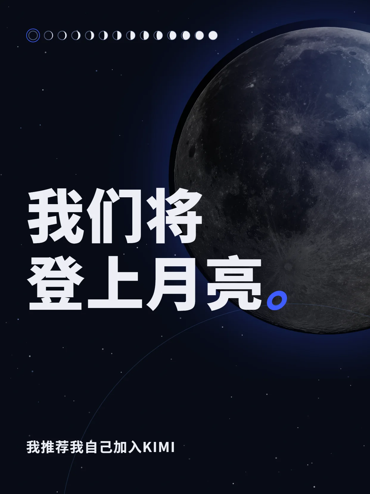
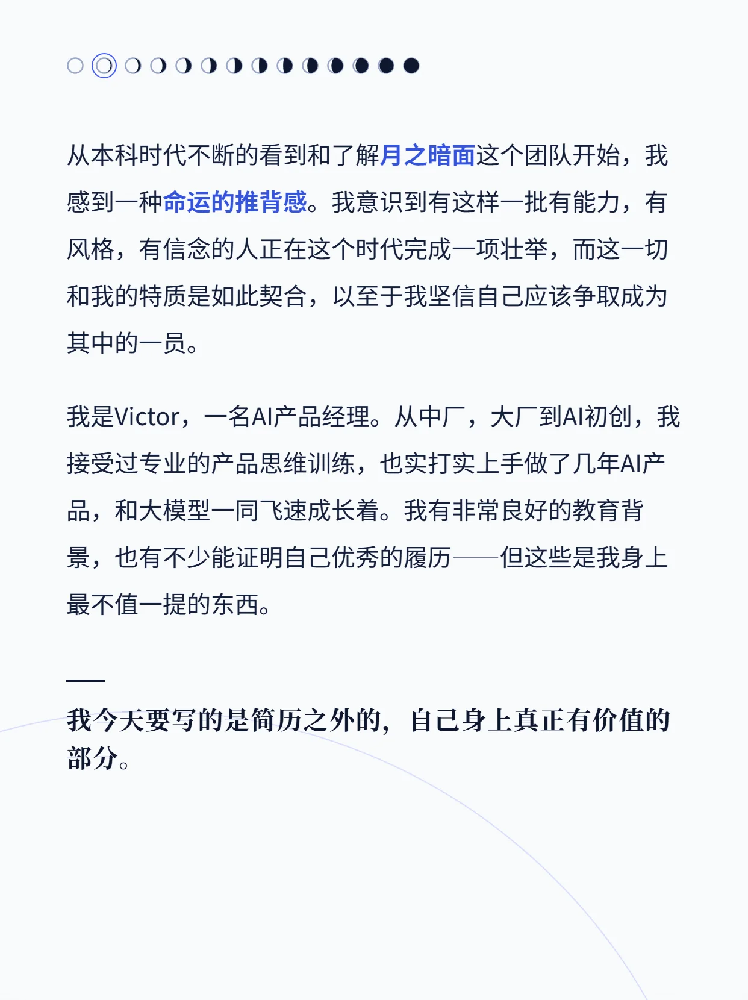
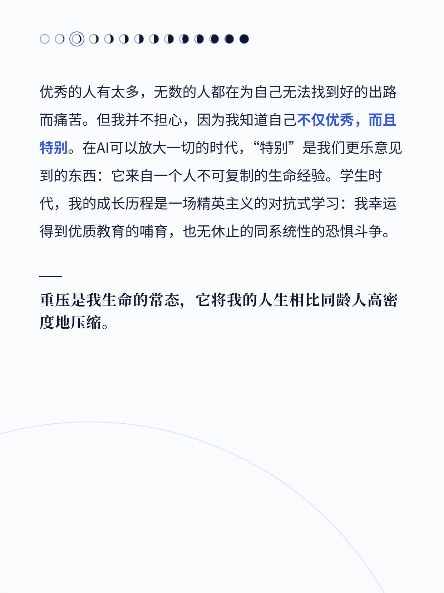

WRITING · 公开文字
小红书发布
全文手写
把想清楚的事，写下来。
一篇写给 Kimi 的自荐信
，
一篇 VibeCoding 的完整复盘
——
都是
全文手写
。

《我们将登上月亮》· 封面

Kimi 自荐信 · 内页

Kimi 自荐信 · 内页
另一篇
《VibeCoding 经验总结——衣LOG》
84 次提交、约 8,000 行代码背后的真实方法：选模型、给约束、管上下文——一个人用 AI 做完整产品的完整复盘。